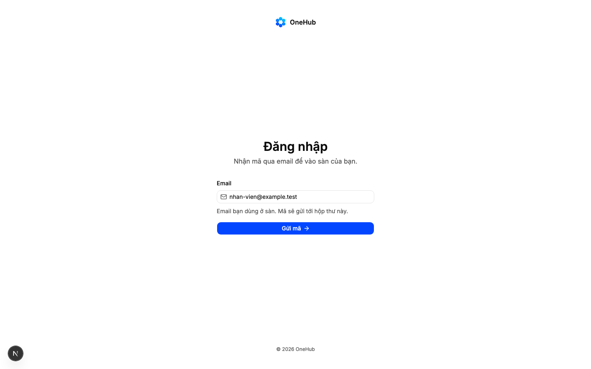

Quyết định 0023: màn đăng nhập ghép tay khi kho còn rỗng; Quỹ hàng đã chọn auth-15
docs/superpowers/specs/2026-11-14-dang-nhap-chon-tu-reui-design.md
| Eval | Tiêu chí | Loại | Verdict | run_id | verified_at |
|---|---|---|---|---|---|
| E1 | AC-1 | ui-check | PASS | minted-dang-nhap-chon-tu-reui-E1-r1 | 2026-11-14T06:31:37Z |
| E1b | AC-1 | test | PASS | minted-dang-nhap-chon-tu-reui-E1b-r2 | 2026-11-14T06:55:58Z |
| E2 | AC-2 | test | PASS | minted-dang-nhap-chon-tu-reui-E2-r2 | 2026-11-14T06:55:58Z |
| E3 | AC-3 | test | PASS | minted-dang-nhap-chon-tu-reui-E3-r2 | 2026-11-14T06:55:58Z |
| E4 | AC-4 | ui-check | PASS | e4-20261114-1 | 2026-11-14T06:55:58Z |
| E4c | AC-4 | test | PASS | minted-dang-nhap-chon-tu-reui-E4c-r2 | 2026-11-14T06:55:58Z |
| E4b | AC-4 | test | PASS | minted-dang-nhap-chon-tu-reui-E4b-r2 | 2026-11-14T06:55:58Z |
| E5 | AC-5 | test | PASS | minted-dang-nhap-chon-tu-reui-E5-r2 | 2026-11-14T06:55:58Z |
| E6 | AC-6 | test | PASS | minted-dang-nhap-chon-tu-reui-E6-r2 | 2026-11-14T06:55:58Z |
| E7 | AC-7 | test | PASS | minted-dang-nhap-chon-tu-reui-E7-r2 | 2026-11-14T06:55:58Z |
| E8 | AC-7 | script | PASS | minted-dang-nhap-chon-tu-reui-E8-r1 | 2026-11-14T06:31:37Z |
AC-1: Given khổ 1440, nền sáng, chưa đăng nhập, When mở `/login` và gõ email, Then màn có dáng `auth-15`: dấu hình và chữ

AC-1: Given khổ 1440, nền sáng, chưa đăng nhập, When mở `/login` và gõ email, Then màn có dáng `auth-15`: dấu hình và chữ
1038 passed (7.9m)
AC-2: Given bốn tệp bài kiểm đăng nhập của hàng 8 và 1m (`tests/e2e-db/login.spec.ts`, `tests/e2e-db/va-dang-nhap.spec.ts`,
make test: all unit tests passed
AC-3: Given Postgres làn H, When chạy trọn bộ bài trình duyệt có cơ sở dữ liệu (đăng nhập, chọn sàn, mã sai, xin mã quá
458 passed (8.4m)
AC-4: Given các bước sau bước email (nhập mã, mã sai, xin mã quá nhiều, chọn sàn, chưa thuộc sàn, phiên không còn sàn,
AC-4: Given các bước sau bước email (nhập mã, mã sai, xin mã quá nhiều, chọn sàn, chưa thuộc sàn, phiên không còn sàn,
1038 passed (7.9m)
AC-4: Given các bước sau bước email (nhập mã, mã sai, xin mã quá nhiều, chọn sàn, chưa thuộc sàn, phiên không còn sàn,
make test: all unit tests passed
AC-5: Given khổ 360, 414, 1024, 1440, nền sáng và tối, When mở `/login`, Then không cuộn ngang, đáy nút «Gửi mã» nằm
1038 passed (7.9m)
AC-6: Given chữ người dùng thấy trên màn, When `make check` chạy, Then xanh: tên khái niệm lấy từ `label()`, câu mới nằm
CODEOWNERS matches governance/autonomy.yaml
AC-7: Given quyết định 0023, When hợp đồng sang `implemented`, Then `design/so-khoi.yaml` có dòng nhập kho khuôn màn
make test: all unit tests passed
AC-7: Given quyết định 0023, When hợp đồng sang `implemented`, Then `design/so-khoi.yaml` có dòng nhập kho khuôn màn
| Khối | Tác tử | Token đầu ra |
|---|---|---|
| S4 round 1 | 16 | 45.362 |
| S4 round 2 | 13 | 42.026 |
2 lượt chấm · tổng 87.388 token
chưa ghi quan sát production